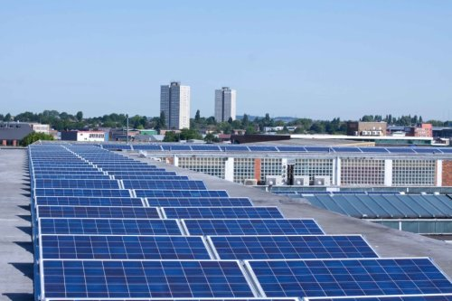
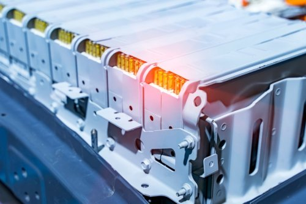

Le futur du Stockage d’Énergie
Pourquoi est-ce important et comment va-t-il évoluer dans les prochaines années?
21 décembre 2022
Le stockage d’énergie existe depuis aussi longtemps que le soleil : une masse d’hydrogène stockée depuis 4,5 milliards d’années et ce dernier n’est qu’au milieu de sa vie.
Le stockage d’énergie pour les véhicules et les bâtiments est possible grâce à un processus de réaction chimique que l’on retrouve couramment à trois différents niveaux:
- Derrière le compteur, chez le consommateur (entreprises et maisons);
- Au niveau de la distribution électrique à basse et moyenne tension;
- Au niveau des lignes de transmission à moyenne et haute tension.
Peu importe où il est déployé, le stockage d'énergie représente une valeur énorme pour l’ensemble du secteur de l’énergie.
Pour les propriétaires de bâtiments (commercial, industriel et résidentiel), la plus-value du stockage d’énergie se retrouve principalement derrière le compteur. Il permet ainsi de décharger l’énergie emmagasinée (donc disponible) au moment précis où celle-ci est requise pour les charges à protéger (ex : ascenseur, éclairage, accès et sorties, systèmes informatique, etc…). De plus, selon les programmes incitatifs offerts par le fournisseur d’électricité, des retombées additionnelles sont à la fois possibles pour le propriétaire et le fournisseur d’énergie.
Différents services existent mais essentiellement, la valeur du stockage d’énergie pour les propriétaires de bâtiments sert à:
- L’alimentation de secours des opérations critiques en cas de panne;
- La réduction des coûts, en limitant la demande sur le réseau lorsque les tarifs sont moins avantageux, soit lors des pointes de puissance quotidiennes ou saisonnières;
- Et l’arbitrage lorsqu’il est judicieux de comparer entre réinjecter l’énergie disponible de la batterie plutôt que de consommer ou stocker celle-ci.
Impact sur les véhicules électriques
Les services apportés par les différentes techniques de stockage seront adaptés par l’effervescence des véhicules électriques et leur ajout sur le réseau actuel.
Des technologies telles que Vehicle-to-Grid (V2G) et Vehicle-to-Home (V2H) permettant de renvoyer l'énergie de la batterie d'une voiture électrique vers le réseau électrique ou la distribution électrique du bâtiment apporteront de nouvelles opportunités de stockage à ne pas négliger.
Impact sur la résilience des bâtiments

Le stockage d’énergie a également un impact direct sur l’augmentation de la résilience d’un bâtiment par conséquent sur la continuité des opérations critiques en cas de panne.
Une technologie de stockage d’énergie permet de fournir une alimentation de secours, de la même façon qu’une génératrice à carburant fossile, rendant ainsi un bâtiment plus résilient aux pannes de courant et permettant de réduire toutes pertes engendrées à l’arrêt (total ou partiel) des opérations de votre entreprise.
En fonction du caractère essentiel de vos opérations, peu d'investissements promettent d'augmenter la résilience d'une installation plus qu'une source d'énergie sûre et facilement accessible par un système de stockage d'énergie bien dimensionné.
De plus et non le moindre des avantages, la recharge de la batterie peut se faire lorsque le réseau est opérationnel à l’heure où c’est le plus économique ou lorsque le réseau est en panne pour une durée indéterminée avec les ressources renouvelables, le soleil principalement.
Au niveau des villes, le stockage peut impliquer des systèmes énergétiques plus résilients et plus flexibles avec des niveaux plus élevés de sécurité énergétique grâce à l'intégration de l'énergie produite localement (ex : systèmes de télécommunications, aiguillage des voies ferroviaires, évacuation des eaux d’orages, etc…).
Du point de vue du citoyen, tout comme du propriétaire de bâtiment, le stockage de l'énergie offre ainsi l'avantage d'un meilleur contrôle des coûts et de l'origine de l'énergie, ainsi qu’une plus grande résilience.
Les technologies de stockage

Différentes technologies de stockage sont présentement offertes et d’autres sont en développement. Les technologies développées au cours des dernières années inclus:
- L’énergie solaire concentrée (CSP)
- L’hydroélectricité (stations de transfert d'énergie par pompage ou STEP)
- Les batteries au Lithium-Ion
- Le stockage de l'énergie par air comprimé, et plus encore.
La technologie la plus pertinente pour les bâtiments commerciaux reste à ce jour la batterie, en raison du coût décroissant, la compacité, la facilité d’intégration aux énergies renouvelables et de son temps de réponse instantané. Les batteries sont aujourd’hui très sécuritaires, il n’est donc plus nécessaire de s’inquiéter d’incidents intempestifs lorsque les pratiques d’intégration sont déterminés par des professionnels.
Le National Renewable Energy Laboratory (NREL) a d’ailleurs examiné 15 technologies de stockage d'énergie à différents stades de commercialisation. Sans tenir compte du coût, la plupart de ces technologies pourraient soutenir le réseau avec de courtes et longues durées. Cependant, la baisse rapide du coût des batteries au Lithium-Ion en fait la technologie de stockage d'énergie la plus intéressante. Le coût des batteries au Lithium-Ion a chuté de 80% au cours de la dernière décennie et devrait continuer à baisser, en grande partie grâce à la demande de véhicules électriques.
De plus, il est fort important de comprendre que le stockage efficace de l'énergie complète la transition vers les énergies renouvelables pour les bâtiments commerciaux et industriels. Malgré leur intermittence, les énergies renouvelables (solaires, éoliennes ou autres) ont de nombreux avantages mais leur pleine valeur peut est surélevée avec la batterie..
Conséquemment, le stockage joue un rôle fondamental pour que les systèmes munis de générateurs d’énergie renouvelable permettent de résoudre ou minimiser l’inconvénient de l’intermittance, de contrer les facteurs de saisonnalité et s’adapter à la demande d’énergie collective fluctuante.
Conclusion
Dans certains cas, la rentabilité des batteries peut être difficile. Heureusement, la puissance de la technologie vadiMAP permet de simuler avec précision le comportement de la batterie pour une année complète et ainsi de calculer les retombées économiques sur une période de 25 années en tenant compte des contextes économiques, opérationnels et techniques du bâtiment.
Chose certaine, l’ère de la génératrice traditionnelle alimentée par des carburants fossiles est derrière nous. La batterie permet de faire beaucoup plus, proprement et à un coût de plus en plus abordable. Il ne faut toutefois pas s’improviser; faire appel à des experts est inévitable pour le succès de l’intégration.
vadiMAP est parfaitement positionné pour aider les entreprises et les propriétaires de bâtiments commerciaux, institutionnels et industriels à devenir des piliers face à ces avancées. En prescrivant la batterie et possiblement l’hydrogène un jour, c’est alors à ce moment que l’on rencontre les trois objectifs fondamentaux de la solution vadiMAP, c’est-à-dire réduire les coûts d’énergie, augmenter la résilience opérationnelle et diminuer l’empreinte environnementale du bâtiment.
Références:
Rocky Mountain Institute – The Economics of Battery Energy Storage
NREL – Storage Futures Study
Urban Insight – Beyond the Tipping Point
Mark Z. Jacobson – 100% Clean, Renewable Energy and Storage for Everything
How Pumped Storage Hydropower Works